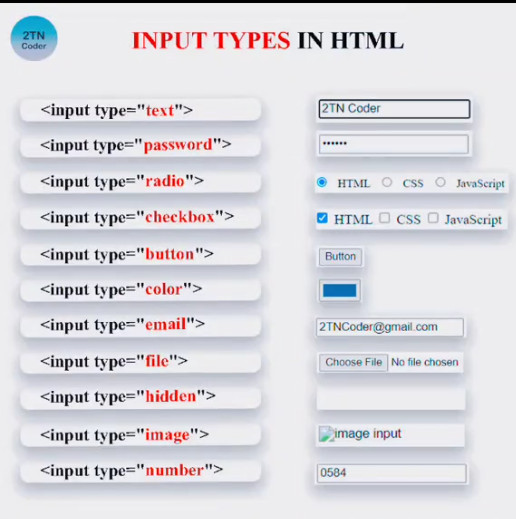
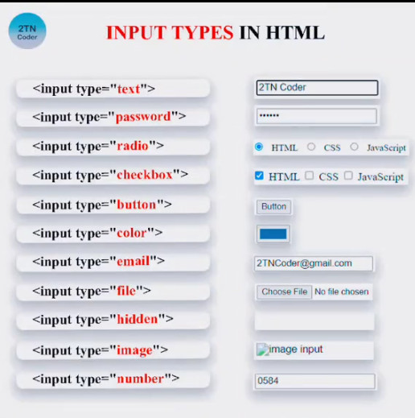
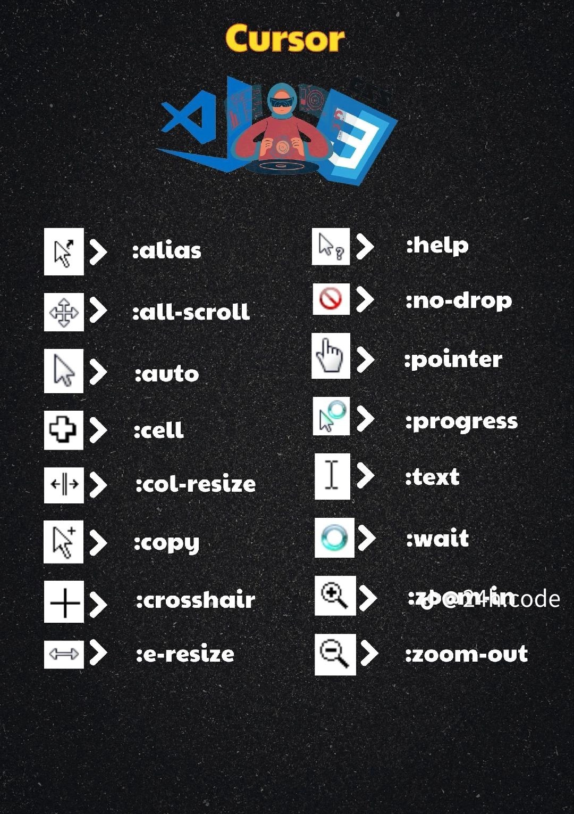
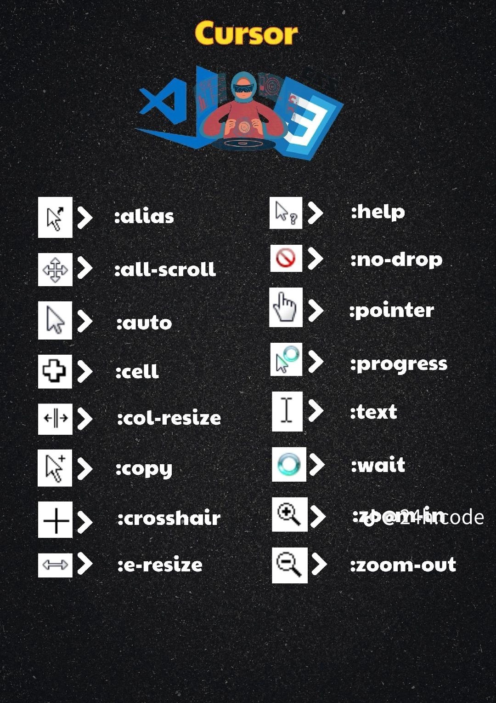

HTML viết tắt của Hypertext Markup Language là ngôn ngữ đánh dấu siêu văn bản , tại vì nó
được viết bởi nhiều thẻ khác nhau ,mỗi thẻ được hiển thị khác nhau trên trình duyệt.
HTML không phải là ngôn ngữ lập trình
Trong thế giới của HTML có đến 119 loại thẻ khác nhau, nhưng không phải tất cả trong số chúng đều phổ biến.
Thẻ HTML là công cụ xác định thuộc tính và bố cục của các thành phần trên trang web. Một thẻ HTML (hay còn gọi là phần tử HTML – HTML elements)
được xác định bởi thẻ mở, nội dung bên trong và thẻ đóng. Tuy nhiên, một số loại thẻ HTML không có phần nội dung (ví dụ như br>, embed> hoặc img>)
-
Mỗi thẻ thường có 3 phần: Phần mở, thân và phần đóng.
-
Một dạng khác của thẻ là thẻ tự đóng (self-closing tag). Ví dụ như thẻ img:img src="./", nó chỉ có 1 tag, và chứa cả phần mở và phần đóng.
Trường hợp này, nội dung hiển thị là ảnh và nó được cung cấp từ nguồn x.gif. Nó không có văn bản để hiển thị nên sẽ tự đóng lại.
Hyperlink (siêu liên kết)
Hyperlink (siêu liên kết) thường được gọi tắt là link, các link khiến cho web trở thành một mạng lưới. Các văn bản (document)
kết hợp cùng với nhau tạo ra loại kiến thức và các công cụ tìm kiếm.
Nó cung cấp nội dung đầy đủ và toàn diện về vấn đề mà người dùng quan tâm.
Người dùng có thể tiếp cận kiến thức này bằng cách đi từ trang này sang trang khác.
Link được gọi là anchor link (liên kết neo), chữ a trong tag là viết tắt của từ anchor.
Ví dụ: University of Michigan
Một anchor tag có 2 phần khác nhau:
-
Phần tham chiếu (hyper reference: viết tắt là href): tham chiếu đến vị trí của nội dung mới.
Nó chính là trang đích nếu người dùng click chuột vào link. Ví dụ: http://www.umich.edu
-
Phần nội dung (anchor text): là văn bản sẽ hiển thị cho người dùng nhìn thấy. Nó thường được gạch chân.
Phần nội dung này có thể là hình ảnh. Bạn thực hiện bằng cách đặt thẻ
 vào bên trong thẻ
vào bên trong thẻ
- Ý nghĩa của “#” với href dưới dạng placeholder link
NON-Semantic HTML (HTML không có ngữ nghĩa)
div & span là thẻ không có ngữ nghĩa
CSS là chữ viết tắt của Cascading Style Sheets
nó là một ngôn ngữ được sử dụng để tìm và định dạng lại các phần tử được
tạo ra bởi các ngôn ngữ đánh dấu (HTML). Nói ngắn gọn hơn là ngôn ngữ tạo
phong cách cho trang web. Bạn có thể hiểu đơn giản rằng, nếu HTML đóng vai
trò định dạng các phần tử trên website như việc tạo ra các đoạn văn bản,
các tiêu đề, bảng, …thì CSS sẽ giúp chúng ta có thể thêm style vào các
phần tử HTML đó như đổi bố cục, màu sắc trang, đổi màu chữ, font chữ,
thay đổi cấu trúc, …
Có 3 cách để đưa, sử dụng CSS vào trong tài liệu HTML là Inline CSS,
Internal CSS và External CSS.
Trong đó cách sử dụng CSS External được dùng phổ biến.
-
Inline CSS
- Được dùng cho chính xác thẻ HTML với thuộc tính style:
h1 style=”color: red; font-size:20px;”>Hello CSS<
/h1>.
-Cách này ít được sử dụng trong việc xây dựng website vì nó rất khó quản lý
style khi trang web phức tạp, chứa nhiều element.
-
Internal CSS
- Được dùng trong chính trang HTML của bạn, cụ thể là
trong thẻ head> của tài liệu HTML. Các CSS sẽ được nằm
trong thẻ style> /style>.

-
External CSS
- Cách hoạt động của một External CSS là các bạn đặt CSS của
các bạn trong một file khác. File này sẽ có phần đuôi mở rộng là *.css.
-Bạn có thể viết toàn bộ mã CSS giống như đã viết trong lúc dùng
Internal Style. Tuy nhiên,
bạn không cần đặt tất cả trong thẻ style, mà chỉ đơn giản là viết mã CSS.
- Cần link file CSS tới HTML để có thể sử dụng.
Thẻ link rel=”stylesheet” href=”…”> dùng để link CSS vào tài liệu HTML,
được đặt trong cặp thẻ head>/head> của tài liệu HTML.

CSS Selectors là tập hợp các bộ chọn trong CSS cho phép bạn
tìm đến đúng phần tử (element) hay các phần tử trong HTML mà bạn muốn áp
dụng thuộc tính CSS. CSS Selectors giống như là đường đẫn, chỉ định để
cho CSS biết bạn đang muốn điều chỉnh, tạo kiểu cho phần tử HTML nào vậy.
Có thể phân CSS Selectors thành nhiều loại:
-
Basic: Bộ chọn element, class, id.
- Class là một danh sách các ký tự, số, dấu gạch dưới và dấu gạch nối.
Các ký tự trong class không phân biệt chữ hoa
chữ thường và phải bắt đầu bằng một ký tự chữ cái hoặc dấu gạch dưới.
- ID là một chuỗi ký tự duy nhất, không phân biệt chữ hoa chữ thường.
ID phải bắt đầu bằng một ký tự chữ cái hoặc dấu gạch dưới.
Sự khác biệt giữa class và ID:
+ Class Thuộc tính class có thể dùng với nhiều element.
Ứng dụng khi nhiều element có chung kiểu. Ví dụ: Các phần tử có
chung thuộc tính quy định màu chữ đen ta có thể sử dụng class
.text-black{color: black;} cho các phần tử đó.
+ ID Thuộc tính id luôn có giá trị là duy nhất trong HTML, sẽ không thể có hai element cùng id.
-
Multiple CSS Selector: Chọn nhiều bộ cùng lúc.
-
Combination CSS Selector: Bộ chọn kết hợp.
Có bốn combinator khác nhau trong CSS Selector :
- descendant selector - bộ chọn hậu duệ (dấu cách)
- child selector - bộ chọn con (>)
- adjacent sibling selector - bộ chọn anh em kế cận (+)
- general sibling selector - bộ chọn anh em chung (~)
-
Sibling CSS Selector: Bộ chọn anh em liền kề.
.jpg) 



 
